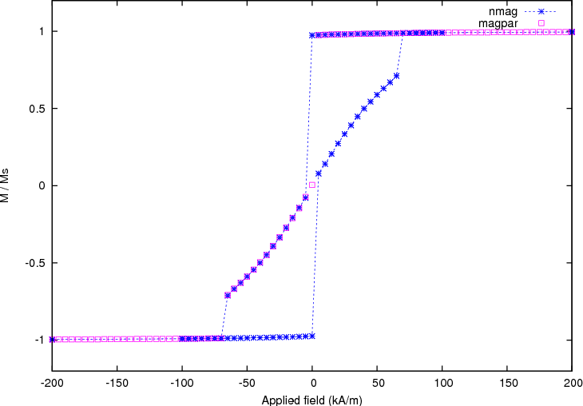

2.5. Example: Hysteresis loop for thin disk¶
This example computes the hysteresis loop of a flat disc magnetised along a direction orthogonal to the main axis. In comparison to the previous Example: Hysteresis loop for Stoner-Wohlfarth particle, it demonstrates the use of a more complex sequence of applied fields.
We use a disc 20 nm thick and 200 nm in diameter for this example (the mesh is contained in nanodot1.nmesh.h5 which is created from the_nanodot.geo with Netgen):
To compute the hysteresis loop for the disc, we use the script nanodot1.py:
import nmag
from nmag import SI, at
#create simulation object
sim = nmag.Simulation()
# define magnetic material
Py = nmag.MagMaterial( name="Py",
Ms=SI(795774,"A/m"),
exchange_coupling=SI(13.0e-12, "J/m")
)
# load mesh: the mesh dimensions are scaled by 100nm
sim.load_mesh( "nanodot1.nmesh.h5",
[("cylinder", Py)],
unit_length=SI(100e-9,"m")
)
# set initial magnetisation
sim.set_m([1.,0.,0.])
Hs = nmag.vector_set( direction=[1.,0.,0.],
norm_list=[1000.0, 900.0, [],
95.0, 90.0, [],
-100.0, -200.0, [],
-1000.0, -900.0, [],
-95.0, -90.0, [],
100.0, 200.0, [], 1000.0],
units=1e3*SI('A/m')
)
# loop over the applied fields Hs
sim.hysteresis(Hs,
save=[('averages', 'fields', 'restart', at('convergence'))]
)
We assume that the previous example have been sufficiently instructive to explain the basic steps such as importing nmag, creating a simulation object, defining the material and leading the mesh. Here, we focus on the hysteresis command:
We would like to apply fields ranging from [1e6, 0, 0] A/m to [100e3, 0, 0] A/m in steps of 100e3 A/m. Then, from [95e3, 0, 0] A/m to [-95e3, 0, 0] A/m we would like to use a smaller step size of 5e3 A/m (to resolve this applied field range better).
This will take us through zero applied field ([0,0,0] A/m). Now, symmetrically to the positive field values, we would like to use a step size of 100e3 A/m again to go from [-100e3, 0, 0] A/m to [-1e6, 0, 0] A/m. At this point, we would like to reverse the whole sequence (to sweep the field back to the initial value).
The information we need for the hysteresis command includes:
a direction for the applied field (here just [1,0,0]),
a list of magnitudes of the field (this is the norm_list) that will be interpreted, and then multiplied with the direction vector,
As in the Example: Simple hysteresis loop and in the Example: Hysteresis loop for Stoner-Wohlfarth particle, we employ a special notation for ranges of field strengths understood by nmag.vector_set. The expression:
[1000.0, 900.0, [], 95.0]
means that we start with a magnitude of 1000, the next magnitude is 900. The empty brackets ([]) indicate that this sequence should be continued (i.e. 800, 700, 600, 500, 400, 300, 200, 100) up to but not beyond the next value given (i.e. 95).
another multiplier that defines the strength of the applied fields (here, 1e3*SI('A/m')).
The corresponding command is:
Hs = nmag.vector_set( direction=[1,0,0],
norm_list=[1000.0, 900.0, [],
95.0, 90.0, [],
-100.0, -200.0, [],
-1000.0, -900.0, [],
-95.0, -90.0, [],
100.0, 200.0, [], 1000.0],
units=1e6*SI('A/m')
)
which computes a list of vectors Hs. The hysteresis command takes this list of applied fields Hs as one input parameter, and will compute the hysteresis loop for these fields:
sim.hysteresis(Hs,
save=[('averages', 'fields', 'restart', at('convergence'))]
)
Again, the second parameter (save) is used to tell the hysteresis command what data to save, and how often. We request that the averages of the fields, the fields and the restart data should be saved at those points in time where we reach convergence. (See also Restart example).
2.5.1. Thin disk hysteresis loop¶
Once the calculation has finished, we can plot the hysteresis loop, i.e. the graph of the magnetisation computed along the direction of the applied field as a function of the applied field strength.
We use the ncol command to extract the data into a text file plot.dat:
$ ncol nanodot1 H_ext_0 m_Py_0 > plot.dat
This file starts as follows:
1000000 0.9995058139817
1000000 0.9995058139817
900000 0.9994226410102
900000 0.9994226410102
800000 0.9993139080655
We use Gnuplot to plot the hysteresis loop:
$ gnuplot make_plot.gnu
using the gnuplot script make_plot.gnu:
set term postscript eps enhanced color
set out 'nanodot_hyst.eps'
set xlabel 'Applied field (A/m)'
set ylabel 'M / Ms'
set xrange [-1.2e6:1.2e6]
set yrange [-1.2:1.2]
plot 'plot.dat' u 1:2 ti 'nmag' with linespoints lw 3 pt 5
The resulting graph is:

and the comparison with the Magpar data, obtained with the script make_comparison_plot.gnu:
set term postscript eps enhanced color
set out 'nanodot_comparison_hyst.eps'
set xlabel 'Applied field (kA/m)'
set ylabel 'M / Ms'
set xrange [-0.2e3:0.2e3]
set yrange [-1.2:1.2]
plot 'plot.dat' u ($1/1000):2 ti 'nmag' w lp 3, 'magpar.dat' u 1:2 ti 'magpar' w p 4
is shown here (note that the Magpar computation only shows half of the hysteresis loop.):
Here we can see a slight difference between nmag and Magpar in the location of the switching point, probably due to different tolerances in both programs when determining time integrator convergence.